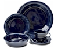

Blue (Cobalt)
Retired1936-1951
Introduced at the annual Pottery and Glass Exhibit in Pittsburgh, Pennsylvania in January 1936 - meet Cobalt. One of the original colors of Fiesta drawn up by Frederick Hurten Rhead himself - a rich shade of blue, Cobalt would later be revived post-86 when Fiesta returned to the marketplace.

Notes on Blue (Cobalt)
Cobalt was one of the five colors Fiesta launched with in 1936, and it's the darkest of them by a long way - deep enough that it reads almost navy in low light. That depth is the point. Set against Old Ivory and Yellow, which arrived the same day, it gave the original palette a weight it would otherwise have lacked. It ran fifteen years and was retired in 1951 alongside Old Ivory, when Fiesta swapped its 1930s look for the softer Gray, Chartreuse and Rose. Cobalt came back after the 1986 relaunch as a Post 86 color under the plain name Cobalt - a different glaze on a different body, and the two are worth telling apart.
Using Blue (Cobalt) on a table
Blue (Cobalt) is soft enough to sit beside almost anything. It works as a bridge between two stronger colors that would otherwise argue. At L* 17 it is a genuinely dark plate, so pale food stands out on it and dark food disappears. It separates strongly from a white cloth (14.5:1) and less so from dark wood.
Below, 5 combinations built only from colors Fiesta has actually produced. Each says which rule it follows, and which pieces you can still buy today.
Buy these to go with it
Blue (Cobalt) was retired in 1951, but these are all in production now - the set you can actually finish buying.
Opposite on the wheel
Yellow sits roughly opposite Blue (Cobalt) in hue, which is the highest-contrast pairing the palette offers. The neutrals keep it from shouting.
- White
- Yellow, 1936-1969
- Sage
-
Your color Blue (Cobalt)
All blue
Every color here is from the blue family, arranged light to dark. A single-family table reads calm and deliberate rather than busy.
Three-way split
Heather and Shamrock sit about a third of the way around the color wheel from Blue (Cobalt) in each direction. Evenly spaced hues stay lively without any one taking over.
Next-door hues
These sit within about 55° of Blue (Cobalt) on the color wheel. Neighboring hues blend instead of competing, which suits a table you want to feel warm rather than sharp.
Production
Where Blue (Cobalt) sits in the line
Blue (Cobalt) was the first blue Fiesta made; 10 more have followed it. In 1936 it arrived alongside Green (Light), Old Ivory, Red, 1936-1943 and Yellow, 1936-1969. What else happened in 1936 →
Closest colors in the palette
Ranked by CIEDE2000 (ΔE) against Blue (Cobalt). Under about ΔE 5 two colors are hard to tell apart side by side - useful when you are identifying an unmarked piece.
On the table alongside Blue (Cobalt)
9 colors were in production at the same time: